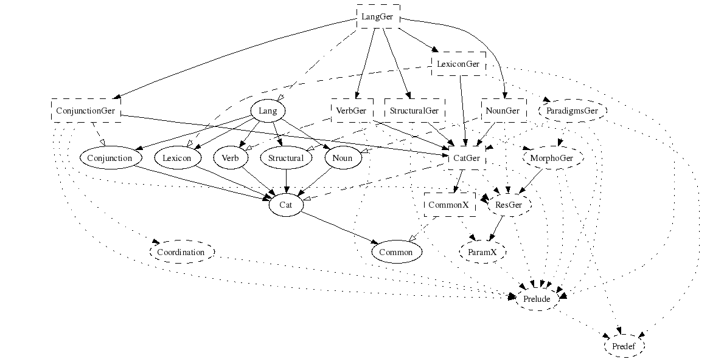

The purpose of this document is to tell how to implement the GF resource grammar API for a new language. We will not cover how to use the resource grammar, nor how to change the API. But we will give some hints how to extend the API.
Notice. This document concerns the API v. 1.0 which has not
yet been released. You can find the beginnings of it
in GF/lib/resource-1.0/. See the
resource-1.0/README for
details on how this differs from previous versions.
The API is divided into a bunch of abstract modules.
The following figure gives the dependencies of these modules.
The module structure is rather flat: almost every module is a direct
parent of the top module Lang. The idea
is that you can concentrate on one linguistic aspect at a time, or
also distribute the work among several authors.
The direct parents of the top could be called phrase category modules, since each of them concentrates on a particular phrase category (nouns, verbs, adjectives, sentences,...). A phrase category module tells how to construct phrases in that category. You will find out that all functions in any of these modules have the same value type (or maybe one of a small number of different types). Thus we have
Noun: construction of nouns and noun phrases
Adjective: construction of adjectival phrases
Verb: construction of verb phrases
Adverb: construction of adverbial phrases
Numeral: construction of cardinal and ordinal numerals
Sentence: construction of sentences and imperatives
Question: construction of questions
Relative: construction of relative clauses
Conjunction: coordination of phrases
Phrase: construction of the major units of text and speech
Expressions of each phrase category are constructed in the corresponding
phrase category module. But their use takes mostly place in other modules.
For instance, noun phrases, which are constructed in Noun, are
used as arguments of functions of almost all other phrase category modules.
How can we build all these modules independently of each other?
As usual in typeful programming, the only thing you need to know about an object you use is its type. When writing a linearization rule for a GF abstract syntax function, the only thing you need to know is the linearization types of its value and argument categories. To achieve the division of the resource grammar to several parallel phrase category modules, what we need is an underlying definition of the linearization types. This definition is given as the implementation of
Cat: syntactic categories of the resource grammar
Any resource grammar implementation has first to agree on how to implement
Cat. Luckily enough, even this can be done incrementally: you
can skip the lincat definition of a category and use the default
{s : Str} until you need to change it to something else. In
English, for instance, most categories do have this linearization type!
What is lexical and what is syntactic is not as clearcut in GF as in
some other grammar formalisms. Logically, however, lexical means
fun with no arguments. Linguistically, one may add to this
that the lin consists of only one token (or of a table whose values
are single tokens). Even in the restricted lexicon included in the resource
API, the latter rule is sometimes violated in some languages.
Another characterization of lexical is that lexical units can be added almost ad libitum, and they cannot be defined in terms of already given rules. The lexical modules of the resource API are thus more like samples than complete lists. There are two such modules:
Structural: structural words (determiners, conjunctions,...)
Lexicon: basic everyday content words (nouns, verbs,...)
The module Structural aims for completeness, and is likely to
be extended in future releases of the resource. The module Lexicon
gives a "random" list of words, which enable interesting testing of syntax,
and also a check list for morphology, since those words are likely to include
most morphological patterns of the language.
In the case of Lexicon it may come out clearer than anywhere else
in the API that it is impossible to give exact translation equivalents in
different languages on the level of a resource grammar. In other words,
application grammars are likely to use the resource in different ways for
different languages.
Unless you are writing an instance of a parametrized implementation (Romance or Scandinavian), which will be covered later, the most simple way is to follow roughly the following procedure. Assume you are building a grammar for the German language. Here are the first steps, which we actually followed ourselves when building the German implementation of resource v. 1.0.
GF/lib/resource/english, named
german.
cd GF/lib/resource/
mkdir german
cd german
Ger and Deu are given, and we pick Ger.
*Eng.gf files from english german,
and rename them:
cp ../english/*Eng.gf .
rename 's/Eng/Ger/' *Eng.gf
Eng module references to Ger references
in all files:
sed -i 's/English/German/g' *Ger.gf
sed -i 's/Eng/Ger/g' *Ger.gf
The first line prevents changing the word English, which appears
here and there in comments, to Gerlish.
Eng - verify this by
grep Ger *.gf
But you will have to make lots of manual changes in all files anyway!
sed -i 's/^/--/' *Ger.gf
This will give you a set of templates out of which the grammar
will grow as you uncomment and modify the files rule by rule.
.gf files, uncomment the module headers and brackets,
leaving the module bodies commented. Unfortunately, there is no
simple way to do this automatically (or to avoid commenting these
lines in the previous step) - but you uncommenting the first
and the last lines will actually do the job for many of the files.
LangGer in GF:
gf LangGer.gf
You will get lots of warnings on missing rules, but the grammar will compile.
pg -printer=missing
tells you what exactly is missing.
Here is the module structure of LangGer. It has been simplified by leaving out
the majority of the phrase category modules. Each of them has the same dependencies
as e.g. VerbGer.

The real work starts now. The order in which the Phrase modules
were introduced above is a natural order to proceed, even though not the
only one. So you will find yourself iterating the following steps:
NounGer, and uncomment one
linearization rule (for instance, DefSg, which is
not too complicated).
CN, NP, N) and the
variations they have. Encode this in the lincats of CatGer.
You may have to define some new parameter types in ResGer.
LexiconGer. Again, it can be helpful to define some simple-minded
morphological paradigms in ResGer, in particular worst-case
constructors corresponding to e.g.
ResEng.mkNoun.
i -retain ResGer
cc mkNoun "Brief" "Briefe" Masc
NounGer and LexiconGer in LangGer,
and compile LangGer in GF. Then test by parsing, linearization,
and random generation. In particular, linearization to a table should
be used so that you see all forms produced:
gr -cat=NP -number=20 -tr | l -table
You are likely to run this cycle a few times for each linearization rule
you implement, and some hundreds of times altogether. There are 66 cats and
458 funs in Lang at the moment; 149 of the funs are outside the two
lexicon modules).
Of course, you don't need to complete one phrase category module before starting
with the next one. Actually, a suitable subset of Noun,
Verb, and Adjective will lead to a reasonable coverage
very soon, keep you motivated, and reveal errors.
Here is a live log of the actual process of building the German implementation of resource API v. 1.0. It is the basis of the more detailed explanations, which will follow soon. (You will found out that these explanations involve a rational reconstruction of the live process! Among other things, the API was changed during the actual process to make it more intuitive.)
These modules will be written by you.
ParamGer: parameter types
ResGer: auxiliary operations (a resource for the resource grammar!)
MorphoGer: complete inflection engine
These modules are language-independent and provided by the existing resource package.
ParamX: parameter types used in many languages
TenseX: implementation of the logical tense, anteriority,
and polarity parameters
Coordination: operations to deal with lists and coordination
Prelude: general-purpose operations on strings, records,
truth values, etc.
Predefined: general-purpose operations with hard-coded definitions
When the implementation of Test is complete, it is time to
work out the lexicon files. The underlying machinery is provided in
MorphoGer, which is, in effect, your linguistic theory of
German morphology. It can contain very sophisticated and complicated
definitions, which are not necessarily suitable for actually building a
lexicon. For this purpose, you should write the module
ParadigmsGer: morphological paradigms for the lexicographer.
This module provides high-level ways to define the linearization of
lexical items, of categories N, A, V and their complement-taking
variants.
For ease of use, the Paradigms modules follow a certain
naming convention. Thus they for each lexical category, such as N,
the functions
mkN, for worst-case construction of N. Its type signature
has the form
mkN : Str -> ... -> Str -> P -> ... -> Q -> N
with as many string and parameter arguments as can ever be needed to
construct an N.
regN, for the most common cases, with just one string argument:
regN : Str -> N
V2, we provide
mkV2, which takes a V and all necessary arguments, such
as case and preposition:
mkV2 : V -> Case -> Str -> V2 ;
dirV2 : V -> V2 ;
-- dirV2 v = mkV2 v accusative []
The golden rule for the design of paradigms is that
The discipline of data abstraction moreover requires that the user of the resource
is not given access to parameter constructors, but only to constants that denote
them. This gives the resource grammarian the freedom to change the underlying
data representation if needed. It means that the ParadigmsGer module has
to define constants for those parameter types and constructors that
the application grammarian may need to use, e.g.
oper
Case : Type ;
nominative, accusative, genitive, dative : Case ;
These constants are defined in terms of parameter types and constructors
in ResGer and MorphoGer, which modules are are not
visible to the application grammarian.
An important difference between MorphoGer and
ParadigmsGer is that the former uses "raw" record types
as lincats, whereas the latter used category symbols defined in
CatGer. When these category symbols are used to denote
record types in a resource modules, such as ParadigmsGer,
a lock field is added to the record, so that categories
with the same implementation are not confused with each other.
(This is inspired by the newtype discipline in Haskell.)
For instance, the lincats of adverbs and conjunctions may be the same
in CatGer:
lincat Adv = {s : Str} ;
lincat Conj = {s : Str} ;
But when these category symbols are used to denote their linearization types in resource module, these definitions are translated to
oper Adv : Type = {s : Str ; lock_Adv : {}} ;
oper Conj : Type = {s : Str} ; lock_Conj : {}} ;
In this way, the user of a resource grammar cannot confuse adverbs with conjunctions. In other words, the lock fields force the type checker to function as grammaticality checker.
When the resource grammar is opened in an application grammar, the
lock fields are never seen (except possibly in type error messages),
and the application grammarian should never write them herself. If she
has to do this, it is a sign that the resource grammar is incomplete, and
the proper way to proceed is to fix the resource grammar.
The resource grammarian has to provide the dummy lock field values
in her hidden definitions of constants in Paradigms. For instance,
mkAdv : Str -> Adv ;
-- mkAdv s = {s = s ; lock_Adv = <>} ;
The lexicon belonging to LangGer consists of two modules:
StructuralGer, structural words, built by directly using
MorphoGer.
BasicGer, content words, built by using ParadigmsGer.
The reason why MorphoGer has to be used in StructuralGer
is that ParadigmsGer does not contain constructors for closed
word classes such as pronouns and determiners. The reason why we
recommend ParadigmsGer for building BasicGer is that
the coverage of the paradigms gets thereby tested and that the
use of the paradigms in BasicGer gives a good set of examples for
those who want to build new lexica.
So far we just give links to the implementations of each API. More explanation iś to follow - but many detail implementation tricks are only found in the cooments of the modules.
It may be handy to provide a separate module of irregular
verbs and other words which are difficult for a lexicographer
to handle. There are usually a limited number of such words - a
few hundred perhaps. Building such a lexicon separately also
makes it less important to cover everything by the
worst-case paradigms (mkV etc).
You can often find resources such as lists of irregular verbs on the internet. For instance, the Irregular German Verbs page gives a list of verbs in the traditional tabular format, which begins as follows:
backen (du bäckst, er bäckt) backte [buk] gebacken
befehlen (du befiehlst, er befiehlt; befiehl!) befahl (beföhle; befähle) befohlen
beginnen begann (begönne; begänne) begonnen
beißen biß gebissen
All you have to do is to write a suitable verb paradigm
irregV : (x1,_,_,_,_,x6 : Str) -> V ;
and a Perl or Python or Haskell script that transforms the table to
backen_V = irregV "backen" "bäckt" "back" "backte" "backte" "gebacken" ;
befehlen_V = irregV "befehlen" "befiehlt" "befiehl" "befahl" "beföhle" "befohlen" ;
When using ready-made word lists, you should think about coyright issues. Ideally, all resource grammar material should be provided under GNU General Public License.
This is a cheap technique to build a lexicon of thousands of words, if text data is available in digital format. See the Functional Morphology homepage for details.
Sooner or later it will happen that the resource grammar API does not suffice for all applications. A common reason is that it does not include idiomatic expressions in a given language. The solution then is in the first place to build language-specific extension modules. This chapter will deal with this issue.
Above we have looked at how a resource implementation is built by the copy and paste method (from English to German), that is, formally speaking, from scratch. A more elegant solution available for families of languages such as Romance and Scandinavian is to use parametrized modules. The advantages are
In this chapter, we will look at an example: adding Italian to the Romance family.
This is the most demanding form of resource grammar writing.
We do not recommend the method of parametrizing from the
beginning: it is easier to have one language first implemented
in the conventional way and then add another language of the
same family by aprametrization. This means that the copy and
paste method is still used, but at this time the differences
are put into an interface module.
This chapter will work out an example of how an Estonian grammar is constructed from the Finnish grammar through parametrization.